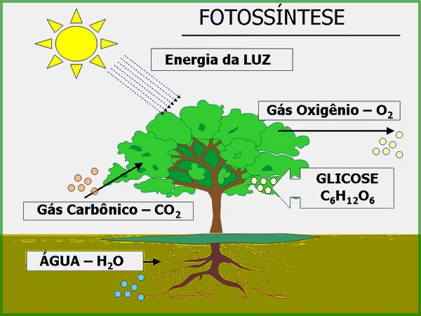

Falar do meio ambiente é algo difícil em muitos casos, isso acontece pela falta de compreensão por parte das pessoas a respeito da importância do meio ambiente.
Iremos então fazer algumas abordagens a respeito deste tema muito importante, e também um trabalho de conscientização. Bem como também iremos falar de uma das medidas mais importantes para amenizar os impactos na natureza que é através da reciclagem.
Vale ressaltar que os temas retratados aqui correspondem a apenas alguns aspectos do meio ambiente, existem mais itens que compõe o meio ambiente, mas vamos resumir o tema só com os mais conhecidos.
O meio ambiente é um conjunto de tudo que é natural encontrado no nosso planeta, ou seja, os seres humanos, os animais, as plantas, os diferentes tipos de ecossistemas entre outros. Além das quatro esferas do meio ambiente, que são a litosfera, hidrosfera e atmosfera.
O meio ambiente é de extrema importância para a sobrevivência da raça humana, isso porque estamos diretamente ligados a natureza e dependente dela. Posso até mesmo dizer que a relação homem x natureza deve ser levada como um casamento sério, que se der errado, vai levar a destruição de ambas as partes.
Mas se você ainda tem alguma dúvida sobre a importância do meio ambiente para a nossa sobrevivência, estarei dando mais alguns detalhes para a sua compreensão.
A água existe em abundância no universo, e cobre a maior parte da superfície do nosso planeta, além do que compõe a maior parte dos fluidos dos seres humanos.
A água nos fornece hidratação, lazer e também irrigação para o plantio da nossa comida. Embora a maior parte da superfície da terra seja composta de água, apenas 3,5% são lagos e rios, e quase toda a água doce do mundo está em forma de gelo, para ser bem específico estamos falando de 69% da água doce.
Com o aumento da população mundial será preciso ter uma conscientização do uso da água, para que o desperdício em massa não cause a escassez e em consequência a extinção de todos as espécies de vida na terra.

Hoje várias empresas já tem projetos de sustentabilidade, coletando água da chuva para ser usada nos banheiros, limpeza interna, regar o jardim etc. Mas não podemos de nos esquecer de fazer a nossa parte.
Flora é um termo indicado para falar dos mais diversos tipos de plantas existentes no nosso planeta. A flora varia de país para país, pois o clima interfere muito para a sobrevivência de determinadas plantas, dito isto muitas espécies de plantas e árvores são encontradas somente em um país ou em um pequeno grupo de países.
O brasil ganhou o título de maior flora do mundo, isto porque temos a floresta amazônica, que é muitas vezes mencionada como “o pulmão do mundo”.
Todos os seres vivos dependem da flora direta ou indiretamente, as plantas nos fornecem alimentos. Além do que ajudam a levar a água da superfície para os lençóis freáticos, isto porque elas absorvem a água e através das suas raízes abastecem os lençóis freáticos.
As plantas aumentam a umidade do ar, transformando o ambiente mais fresco, evitando as doenças que são geradas pelo ar seco. Elas também são responsáveis por nos fornecer oxigênio através de um processo chamado fotossíntese.
Segundo a UFVJM
“Fotossíntese é um processo físico-químico, a nível celular, realizado pelos seres vivos clorofilados, que utilizam dióxido de carbono e água, para obter glicose através da energia da luz.”
Como já vimos as plantas são de extrema importância para a vida na terra, então devemos preservá-las, hoje já existem diversas empresas com projetos de reflorestamento, mais ainda existem muitas empresas que extraem de forma criminosa as nossas árvores, o que prejudica o nosso mundo.

A fauna é o termo usado para referenciar os diversos tipos de animais encontrados em uma determinada região. Vale ressaltar que como na flora, a fauna depende do tipo de clima da sua região para sobreviver, com o desmatamento do seu habitat natural, determinados grupos de animais não conseguem se adaptar as condições da flora e clima de outras regiões, o que pode levar a morte de algumas espécies.
Os animais são muito importantes para o equilíbrio da natureza, além de nós fornecer alimento, alguns tipos de animais como os pássaros, fazem o plantio de novas árvores quando se alimentam dos frutos e derrubam as sementes no chão.
Infelizmente a mão do homem vem contribuindo para a extinção ou uma ameaça de extinção para diversas espécies, estima-se que atualmente, 16.119 espécies são consideradas em perigo de extinção em todo o mundo.
As espécies deixam de existir por diversos fatores, mas o principal é o desmatamento, que é uma ação exclusiva do homem.
Os animais fazem um equilíbrio entre si e entre o meio ambiente, não deixando que algumas espécies venham a se proliferar de mais, ou fazendo a polinização de algumas plantas. Logo se uma espécie for extinta acaba causando alguma deficiência no meio ambiente.
A atmosfera é um conjunto de camadas de gases que envolve a superfície da terra.
Para os estudos geográficos ela é a camada mais importante, pois é através dela que temos os fenômenos meteorológicos, como por exemplo a chuva, a variação de umidade etc.
A estratosfera está acima da troposfera, ela se estende por 50 km, e é responsável por abrigar a camada de ozônio, cuja a composição tem a função de nós proteger dos raios solares.
Esta vem logo a seguir, se estende por 80km de altitude, ela apresenta uma menor temperatura com relação as outras.
Chegando a atingir 500km de altitude, esta camada é de grande importância para os seres humanos, pois contem gases ionizados que ajudam a propagar as ondas de rádio.
Basicamente é a camada que os seres humanos utilizam para posicionar os satélites.
Agora que vimos um pouco de alguns aspectos que compõe o meio ambiente, precisamos também saber como podemos preservá-lo.
Uma das coisas que podemos fazer é a reciclagem de alguns elementos.
Reciclagem é o reaproveitamento de algum material, para que seja renovado e transformado em outro.
Esse processo é de muito interesse para as empresas, pois auxiliam as empresas a reduzir custos, visto que o custo para extrair este material da natureza é muito mais caro, do que reciclar algo que já foi retirado.
A natureza não fica de fora, com o processo da reciclagem, as empresas não exploram tanto o meio ambiente, por exemplo: em uma indústria de papel, quando se aplica o processo de reciclagem, esta empresa deixa de cortar um percentual de árvores, contribuindo assim para todo o ciclo ambiental.
O processo de reciclagem ajuda a diminuir a quantidade de resíduos que são jogados no solo. E visto que a população mundial está aumentando, quanto mais lixo aterrado, mais prejuízo para o meio ambiente, pois o lixo aterrado pode poluir lençóis freáticos, nascentes, solos férteis etc.
Quase todos os matérias podem ser reciclados, abaixo veremos uma lista produzida pelo Jornal Hoje com os matérias que podem ser reciclados.
Os materiais mais comuns encontrado no lixo urbano e que podem ser reciclados são:
Alumínio
Metais ferrosos:
Papel e papelão:
Vidro:
Materiais não recicláveis:
Bom agora você já tem uma ideia do que é o meio ambiente e como podemos amenizar os impactos na natureza, volte para o menu e acesso as páginas para obter mais informações sobre os processos de reciclagem.